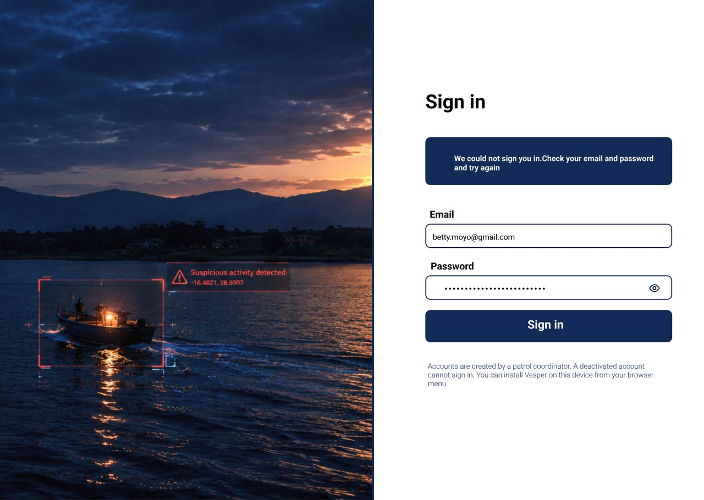
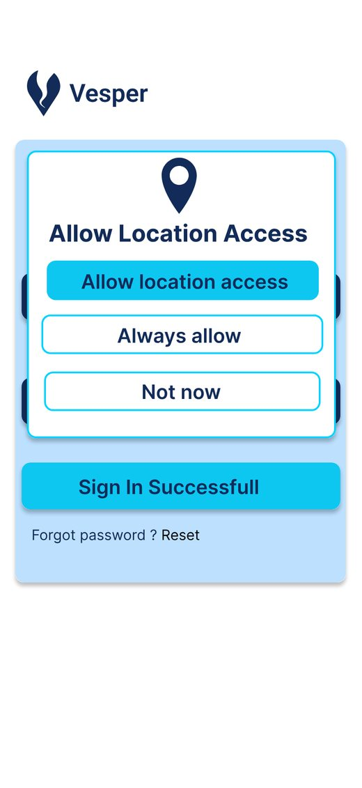
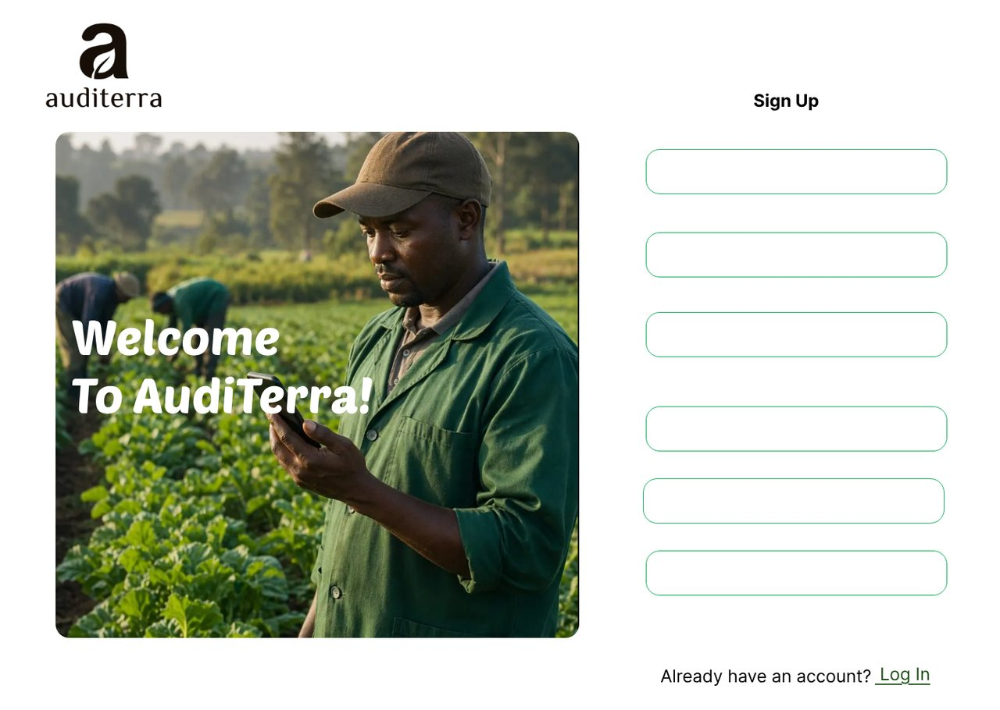
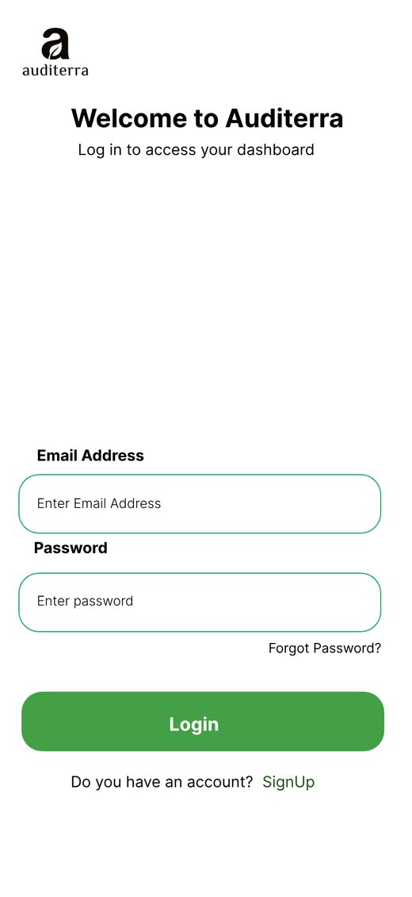

Hi, I'm Oyoya Oktoy.
Software engineer based in Nairobi, Kenya.
I build reliable, secure software across the stack, with core strengths in backend APIs, mobile apps, web dashboards and quality assurance. I love turning messy, real-world problems into products people can trust every day.

Work
Ideas I've turned into working products. Software that keeps working where the signal doesn't, built with the people who use it.

Skills
From research to release: the areas I work across on every project.
01.Backend and APIs
REST APIs, database design and the business rules behind them, built to be tested and documented.
02.Mobile apps
Flutter apps that keep working offline and get ready for the app stores.
03.Web dashboards
Clear dashboards that help people make decisions quickly.
04.QA and security
Testing that finds problems before users do, and policies that protect the people in the data.
05.Product and UX
Research, user flows and interface design grounded in how people actually work.
About
I'm a software engineer enthusiastic about building real world software products that help solve real-world problems. I am passionate about owning features from start to finish, this looks like; sketching the product flow in Figma, designing the API and database behind it, building the screens, then testing the product in every environment and agile and iteration phases.
My projects have taken me from fisheries patrols on Lake Kariba in Zimbabwe to soil restoration on small farms across Kenyaand a Business checkout Point of Sale. Each one taught me to ask more questions before writing code, keep screens simple, and building with users pain points in mind.
- Education
- AkiraChix CodeHive, 2026
- Languages
- English, Swahili, French
- Focus
- Backend, mobile, QA


The problem
Kapenta rigs on Lake Kariba fish at night under bright lights. Catches fell from about 30,000 tonnes in the 1990s to about 5,200 tonnes in 2022–23, with too many rigs and unlicensed fishing among the pressures.
The lake is huge and patrols can't visit every zone each night. Some rig owners remove or tamper with their vessel trackers, and officers often work with no signal, recording results on paper.
The solution
Every night Vesper reads NASA VIIRS night-light data for the lake, about 500 m per pixel. It filters out lights that aren't from fishing and compares each zone with its own normal level. If a zone is unusually bright, Vesper raises an alert with a confidence level and a reason.
Coordinators assign alerts on a web dashboard. Officers check the zone with a phone app that saves inspections, violations and catch checks offline, then syncs when signal returns.
- 21:00Satellite passVIIRS records night lights over Lake Kariba.
- Nightly jobZone checkQuality check, noise removed, each zone compared with its own baseline.
- DashboardAlert assignedThe coordinator picks an officer on patrol near the zone.
- Phone, offlineField checkThe officer records what they found, even with no signal.
- SyncResult reviewedReports reach the dashboard and improve future alerts.
What I worked on
- Coordinator dashboard pages in Next.js: Overview, Alerts, alert detail and reassignment with officer filters, Report reviews, Zones and zone setting history, and Users.
- Made Overview and Report reviews count reports the same way, and kept pages working when one data source fails.
- Replaced a technical cluster number with the field results officers actually report.
- Prepared the Flutter officer app for the app stores: package name, app icon, and Firebase Crashlytics on Android and iOS.
- Wrote the Vesper security policy around Zimbabwe's Cyber and Data Protection Act.
- Planned usability testing for the officer app and the coordinator dashboard.
Decisions that shaped it
- Alerts are leads, not proof. A satellite can't tell a licensed boat from an unlicensed one, so no screen calls an alert illegal.
- "Could not verify" is always allowed. Nothing in the app pushes an officer to approach a vessel.
- Offline first. Records save on the phone and sync without duplicates.
- Location only with permission. Coordinators see officers' latest positions to plan patrols, never to rank them.


The problem
Farmers whose land is degrading often have no direct way to reach a soil expert. Experts working in rural areas also need to record diagnoses where internet is weak or missing.
The solution
Auditerra lets farmers register and report land degradation. The platform assigns a field expert, who captures soil and land data on a phone, offline if needed, and sends back restoration recommendations.
- FarmerRegistersSigns up and adds their land.
- FarmerReportsDescribes the degradation they see.
- PlatformAssignsA field expert is matched to the case.
- Expert, offlineDiagnosesCaptures soil and land data on the farm.
- ExpertRecommendsSends restoration steps back to the farmer.
What I worked on
- Built backend REST APIs in FastAPI for the platform's core features.
- Designed the relational database in PostgreSQL with SQLAlchemy.
- Built a Flutter screen for field experts to capture soil diagnostics and land information offline.
- Designed farmer and expert interfaces from UX research.
Quality and process
- Designed the workflows for farmer registration, degradation reports, expert assignment and recommendations.
- Tested every endpoint in Swagger UI and Postman, including negative, boundary and edge cases.
- Contributed to the system architecture and technical documentation.